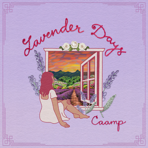

by Caamp
This was the first time I listened to Caamp not on shuffle and it was the first time I feel like I got an assortment of their music. I love the sections of simple guitar/banjo strumming because it feels like I'm rocking out on a front porch in a squeaky rocking chair while looking over my farm land. Overall, I was very pleased with this album. My personal favorite tracks were Lavender Girl, The Otter and Snowshoes. Album was reviewed on March 18th, 2026.